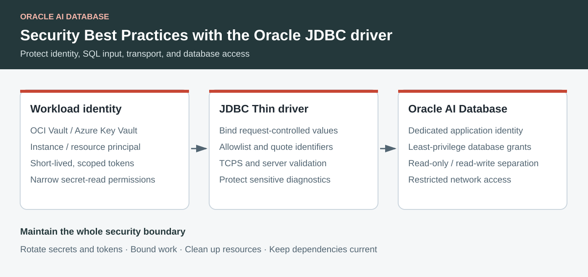

Security Best Practices with the Oracle JDBC driver
Protect database access with password-less connections, safe SQL, encrypted transport, and least-privilege controls.

Key Takeaways
- Keep database passwords out of application configuration with vault providers, or use short-lived identity tokens.
- Bind SQL values, allowlist dynamic identifiers, and keep TLS server identity validation enabled.
- Limit database and vault permissions, and protect credentials in logs and diagnostics.
- Manage timeouts, pooled connections, and dependency updates as part of the security boundary.
The Oracle JDBC driver sits at an important security boundary: it carries database credentials, sends application input to SQL, and often runs inside a cloud workload with access to valuable data. A strong design combines identity-based authentication, encrypted transport, parameterized SQL, least privilege, and careful handling of driver resources.
This article uses the JDBC Thin driver. Every connection URL below uses Easy Connect Plus, for example:
String url = "jdbc:oracle:thin:@tcps://db.example.com:1522/appdb?enable=true";Easy Connect Plus removes the need for a tnsnames.ora alias and can carry connection properties after ?. The examples keep provider configuration in a Properties object instead of putting secrets or tokens in the URL. This reduces the chance that a URL copied into a log, metric, or exception will expose sensitive data.
1. Password-less connection
There are two useful password-less patterns:
- Retrieve a traditional database password from OCI Vault or Azure Key Vault at connection time. The application still authenticates to the database with a password, but the password is not stored in source code, an environment variable, or an application configuration file.
- Use a short-lived identity token, such as an OCI IAM database token. This removes the database password from the application flow altogether.
For the vault and token provider examples below, add the Oracle JDBC provider extension that matches the cloud:
<dependency>
<groupId>com.oracle.database.jdbc</groupId>
<artifactId>ojdbc11</artifactId>
<version>${ojdbc.version}</version>
</dependency>
<!-- Use a version compatible with the ojdbc driver in the application. -->
<dependency>
<groupId>com.oracle.database.jdbc</groupId>
<artifactId>ojdbc-provider-oci</artifactId>
<version>${ojdbc.providers.version}</version>
</dependency>
<!-- Add this instead of, or in addition to, the OCI provider when needed. -->
<dependency>
<groupId>com.oracle.database.jdbc</groupId>
<artifactId>ojdbc-provider-azure</artifactId>
<version>${ojdbc.providers.version}</version>
</dependency>The provider artifacts implement Oracle JDBC service-provider interfaces. Pin them to versions that are tested with the application’s ojdbc version; do not silently float a security-sensitive dependency.
OCI Vault password
Store the password as an OCI Vault secret and grant the workload identity permission to read that specific secret. The OCI resource provider then supplies the password to the driver when the connection is opened:
import java.sql.Connection;
import java.sql.DriverManager;
import java.sql.SQLException;
import java.util.Properties;
String url = "jdbc:oracle:thin:@tcps:db.example.com:1522/appdb";
Properties properties = new Properties();
properties.setProperty("user", "APP_USER");
properties.setProperty(
"oracle.jdbc.provider.password",
"ojdbc-provider-oci-vault-password");
properties.setProperty(
"oracle.jdbc.provider.password.ocid",
"ocid1.vaultsecret.oc1..example");
properties.setProperty(
"oracle.jdbc.provider.password.authenticationMethod",
"instance-principal");
try (Connection connection = DriverManager.getConnection(url, properties)) {
// The application never contains or passes the database password.
}Use resource-principal instead of instance-principal when the application runs as an OCI resource principal, for example in a serverless or managed workload. The identity still needs a narrowly scoped policy to read the secret.
Azure Key Vault password
The equivalent Azure provider reads a Key Vault secret. Managed identity avoids placing a client secret in the application:
String url = "jdbc:oracle:thin:@tcps:db.example.com:1522/appdb";
Properties properties = new Properties();
properties.setProperty("user", "APP_USER");
properties.setProperty(
"oracle.jdbc.provider.password",
"ojdbc-provider-azure-key-vault-password");
properties.setProperty(
"oracle.jdbc.provider.password.vaultUrl",
"https://app-secrets.vault.azure.net/");
properties.setProperty(
"oracle.jdbc.provider.password.secretName",
"oracle-app-password");
properties.setProperty(
"oracle.jdbc.provider.password.authenticationMethod",
"managed-identity");
try (Connection connection = DriverManager.getConnection(url, properties)) {
// Use the connection; do not log the resolved password.
}If a service principal is required, prefer certificate-based authentication and keep the certificate private key outside the application image. In either cloud, use secret versioning and rotation, test rotation before changing the active version, and grant the workload only the get/read permission it needs.
OCI token authentication with instance or resource principal
An OCI access-token provider can obtain a database token using the workload identity and pass it to the JDBC driver. The database user must be mapped to the corresponding IAM identity, and the OCI policy must authorize database access.
import java.sql.SQLException;
import java.sql.Statement;
public class WhoAmI {
public static void main(String[] args) throws SQLException {
try (
Connection connection =
DriverManager.getConnection("jdbc:oracle:thin:@tcps:db.example.com:1522/appdb?token_auth=OCI_INSTANCE_PRINCIPAL&oci_database=ocid1.autonomousdatabase.oc1.phx.xyz&oci_compartment=ocid1.compartment.oc1..ijklm");
Statement statement = connection.createStatement();
) {
try (
ResultSet resultSet = statement.executeQuery(
"SELECT"
+ " SYS_CONTEXT('USERENV', 'SESSION_USER') AS database_user,"
+ " SYS_CONTEXT('USERENV', 'AUTHENTICATED_IDENTITY') AS external_identity,"
+ " SYS_CONTEXT('USERENV', 'AUTHENTICATION_METHOD') AS authentication_method,"
+ " SYS_CONTEXT('USERENV', 'IDENTIFICATION_TYPE') AS identification_type,"
+ " SYS_CONTEXT('USERENV', 'OS_USER') AS os_user"
+ " FROM sys.dual")
) {
ResultSetMetaData metaData = resultSet.getMetaData();
while (resultSet.next()) {
for (int i = 0; i < metaData.getColumnCount(); i++) {
System.out.println(
metaData.getColumnName(i + 1)
+ " : "
+ resultSet.getString(i + 1));
}
}
}
}
}
}Instead of an instance principal, you can also use resource principal by changing the value of the property "token_auth" from "OCI_INSTANCE_PRINCIPAL" to "OCI_RESOURCE_PRINCIPAL".
Use the narrowest token scope possible—ideally one database rather than an entire compartment. Tokens are short-lived, so make sure the provider and connection pool can refresh them without requiring an application restart. Do not place a token in the URL or in a URL query parameter; URLs are frequently recorded by infrastructure and observability systems.
2. Prevent SQL injection
Bind values with PreparedStatement
Never concatenate request data into SQL. A bind variable keeps data separate from the SQL grammar, and it also lets the driver and database reuse parsed statements:
String url = "jdbc:oracle:thin:@tcps:db.example.com:1522/appdb";
Properties properties = new Properties();
properties.setProperty("user", "APP_USER");
String sql = "select order_id, total "
+ "from orders "
+ "where customer_id = ? and status = ?";
try (Connection connection = DriverManager.getConnection(url, properties);
PreparedStatement statement = connection.prepareStatement(sql)) {
statement.setLong(1, customerId);
statement.setString(2, status);
try (ResultSet results = statement.executeQuery()) {
while (results.next()) {
// Process the row.
}
}
}The same rule applies to INSERT, UPDATE, DELETE, PL/SQL calls, dates, numbers, JSON, and LIKE patterns. If a value is optional, add a known SQL fragment in application code and continue to bind the value; do not build a fragment by concatenating the raw request.
Treat identifiers separately
JDBC bind variables represent values, not table names, column names, sort directions, or SQL keywords. For dynamic identifiers:
- Prefer a fixed mapping or allowlist.
- Reject anything outside that allowlist.
- Use
Statement.enquoteIdentifierto produce a valid delimited identifier. - Continue using bind variables for every parameter value in the statement.
import java.sql.Statement;
import java.util.Locale;
import java.util.Set;
private static final Set<String> ALLOWED_TABLES =
Set.of("ORDERS", "ORDERS_ARCHIVE");
static String safeTableName(Connection connection, String requested)
throws SQLException {
String canonical = requested.toUpperCase(Locale.ROOT);
if (!ALLOWED_TABLES.contains(canonical)) {
throw new IllegalArgumentException("Unsupported table");
}
try (Statement statement = connection.createStatement()) {
return statement.enquoteIdentifier(canonical, false);
}
}
String url = "jdbc:oracle:thin:@tcps:db.example.com:1522/appdb"
+ "?ssl_server_dn_match=true";
Properties properties = new Properties();
properties.setProperty("user", "APP_USER");
try (Connection connection = DriverManager.getConnection(url, properties)) {
String table = safeTableName(connection, requestedTable);
String sql = "select order_id, total from " + table
+ " where customer_id = ?";
try (PreparedStatement statement = connection.prepareStatement(sql)) {
statement.setLong(1, customerId);
try (ResultSet results = statement.executeQuery()) {
// Process the row.
}
}
}enquoteIdentifier protects the SQL syntax of the identifier, but it does not decide whether the caller should be allowed to access that table. The allowlist remains essential. Do not use enquoteLiteral as a substitute for a PreparedStatement; bind values instead.
3. Encrypt the connection and validate the server
Use TCPS in the Easy Connect Plus URL for connections that cross a host or network boundary. Keep server certificate and distinguished-name validation enabled (it's the default):
String url = "jdbc:oracle:thin:@tcps://db.example.com:1522/appdb"
+ "?connect_timeout=10";Do not disable certificate validation to work around a wallet or hostname problem. Fix the trust configuration, and explicitly configure the expected server DN when the deployment requires it. For Autonomous Database mTLS, store the wallet in a managed secret store and use the cloud provider’s wallet provider rather than committing a wallet to the repository or container image.
4. Apply least privilege at the database boundary
Create a dedicated database account or schema for each application or trust boundary. Grant only the tables, views, packages, and operations that application needs. In particular:
- Never run application traffic as
SYS,SYSTEM, or another administrative account. - Prefer views and stored procedures when they provide a smaller, clearer data boundary.
- Separate read-only and read/write identities.
- Restrict database-network access with private endpoints, firewalls, security lists, and security groups.
- Treat a vault read permission and a database grant as separate controls; an application should not receive either one broadly.
5. Protect credentials, tokens, and diagnostics
- Do not log JDBC URLs,
Properties, connection strings, access tokens, secret values, or complete SQL statements containing sensitive data. - Redact
SQLExceptiondetails before returning them to a caller. Keep detailed diagnostics in access-controlled logs. - Do not put
oracle.jdbc.accessToken, passwords, or wallet material in an Easy Connect Plus query string. - Use short-lived tokens and rotate vault secrets. Revoke and replace credentials when a workload, image, or identity is decommissioned.
- Lock down configuration files with operating-system permissions when a file-based provider is unavoidable.
- Disable verbose driver tracing in production unless it is needed for a controlled incident, and verify that the logging pipeline redacts connection properties.
6. Bound work and clean up resources
Use try-with-resources for Connection, PreparedStatement, Statement, and ResultSet. Set application-appropriate query and network timeouts so a stalled database or network path cannot consume every request thread. Use a maintained connection pool for production workloads, configure a maximum connection lifetime, validate connections when they are borrowed, and reset session state before returning them to the pool.
Keep transactions short, commit deliberately, and roll back on failure. Never share a JDBC Connection or mutable statement object across request threads. These practices limit the impact of abandoned sessions, reduce resource-exhaustion risks, and prevent one request’s session state from leaking into another.
7. Keep the dependency and runtime chain current
Use a supported JDK and a current Oracle JDBC driver/provider combination. Review driver and provider release notes, scan the dependency graph, verify artifacts in the build pipeline, and remove unused JDBC extensions. A secure database connection is only as strong as the application, provider library, cloud identity, TLS trust configuration, and database grants that surround it.
Practical review checklist
Before shipping a JDBC integration, verify that:
- The URL is Easy Connect Plus and uses
tcpsfor remote traffic. - The application has no database password, token, wallet, or secret value in source control.
- Vault access uses a workload identity with the smallest possible read permission.
- Token authentication uses an explicit, narrow scope and a database/IAM mapping.
- All request-controlled values use
PreparedStatementbind variables. - Dynamic identifiers are allowlisted and passed through
enquoteIdentifier. - TLS server identity validation remains enabled.
- Database privileges, network access, logs, pool settings, and timeouts have been reviewed together.
Further reading
- Oracle JDBC data sources and URLs
- Oracle JDBC client-side security features
- Oracle JDBC service-provider extensions
- Oracle JDBC providers for OCI
- Oracle JDBC providers for Azure
- Java SE
StatementAPI
FAQ
Does retrieving a password from a vault eliminate database passwords?
No. A vault provider keeps the password out of the application’s source and configuration, but the database still uses password authentication. A short-lived identity token removes the database password from that application flow.
Can bind variables protect dynamic table and column names?
Bind variables protect values, not SQL identifiers. Use a fixed mapping or allowlist for identifiers, quote them with Statement.enquoteIdentifier, and continue binding every parameter value.
Should certificate validation be disabled when a connection fails?
No. Fix the trust, wallet, or hostname configuration. Keep server certificate and distinguished-name validation enabled, and configure the expected server DN when required.
What else belongs in a JDBC security review?
Review database grants, network access, vault permissions, logging, token and secret rotation, pool settings, timeouts, and supported driver/provider and JDK versions together.